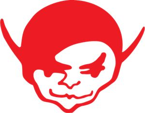

| FECHA | UBICACIÓN |
|---|---|
| 14 de Diciembre | Recital en La Plata |
| 15 de Diciembre | Recital en Buenos Aires |
| 18 de Diciembre | Recital en Rosario |
| 21 de Diciembre | Recital en San Luis |
| 22 de Diciembre | Recital en Mendoza |
| 25 de Enero | Recital en Córdoba |
| 26 de Enero | Recital en Bariloche |
Los Piojos es una banda Argentina de rock formada a fines del año 1988, en la localidad de Ciudad Jardín Lomas del Palomar, en la zona oeste del Gran Buenos Aires. Estuvo conformada, primordialmente, por el vocalista y letrista Andrés Ciro Martínez, el bajista Miguel Ángel Rodríguez, los guitarristas Gustavo (Tavo) Kupinski y Daniel Fernández, y el baterista Daniel Buira. De todos los grupos surgidos durante la década de los 90, Los Piojos se erigió como una de los más populares incluso después de su separación, no solo por su poder de convocatoria y las importantes cifras de ventas en sus álbumes, sino también por una discografía de carácter sólido que fue haciéndose cada vez más personal.
Tras un período de formación de cuatro años de presentaciones en vivo por alrededor de Argentina, Los Piojos publicaron su primer álbum de estudio, Chactuchac, en 1992, que incluyeron los sencillos «Tan solo» y «Yira - yira», que se convirtieron en insignias de la banda. Su segundo álbum, Ay ay ay (1994), continuó lanzando en auge su popularidad. Su consagración definitiva se dio con 3er arco (1996), que tuvo su punto comercial más alto, con los sencillos «El farolito» y «Verano del '92», y su aclamación por la crítica, siendo incluido en la lista de los "Los 100 mejores álbumes del rock argentino" según la revista Rolling Stone. A partir de allí Los Piojos empezarían a incorporar elementos de candombe, murga y tango en sus siguientes proyectos, Azul (1998) el 1 de agosto de 1999 es la presentación de RITUAL disco grabado en vivo y Verde paisaje del infierno (2000). La banda retornaría al éxito comercial con sus dos últimas publicaciones, Máquina de sangre (2003) y Civilización (2007), alcanzando su cúspide de convocatoria en recitales, y acabarían separándose el 30 de mayo de 2009 con un show en el Estadio Monumental ante 65 mil personas. Luego de 15 años, la banda volverá a juntarse el 14, 15, 18, 21 y 22 de diciembre en el Estadio Único de La Plata Diego Armando Maradona.
 La boletería indica que no hay entradas físicas, solo digitales (e-tickets). Tras la compra, el e-ticket estará disponible en el historial de compras y se puede imprimir o mostrar desde un dispositivo móvil al ingresar al evento. Recorda que existe un recargo por el servicio de la ticketera al monto de la entrada adquirida.